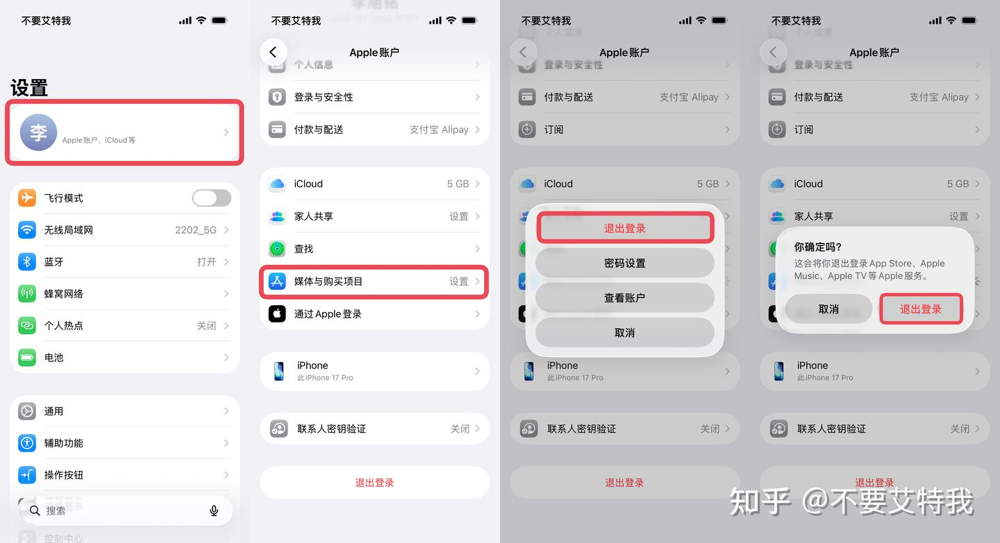
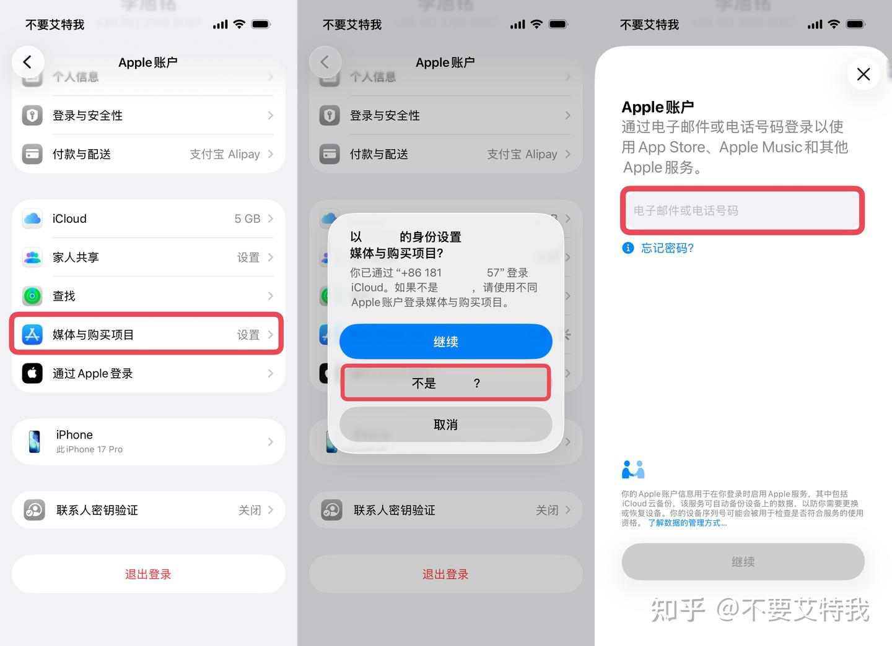
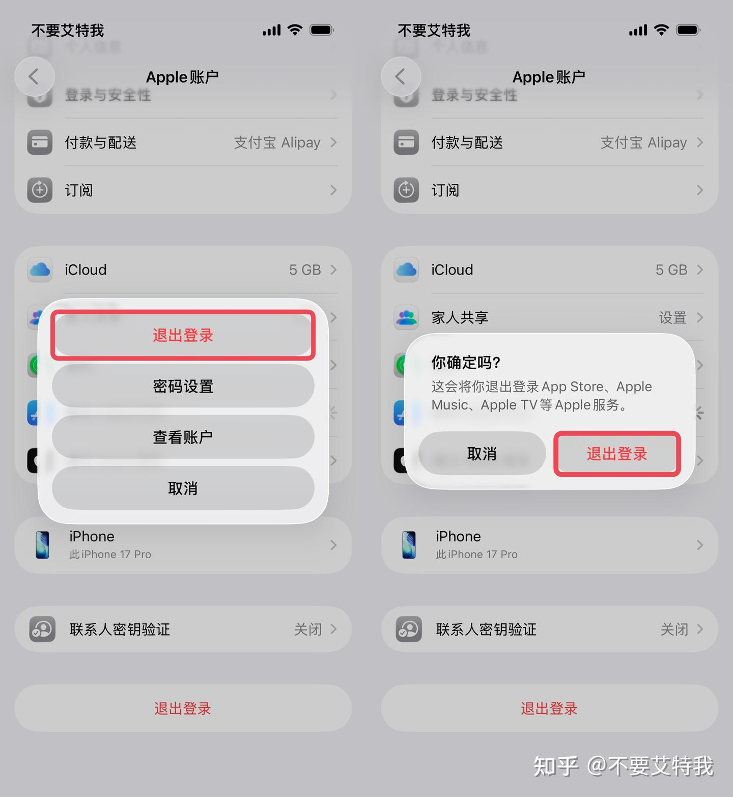
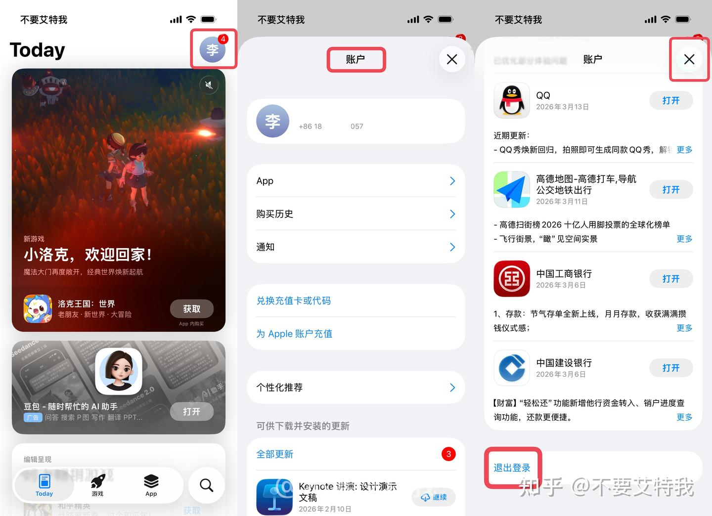
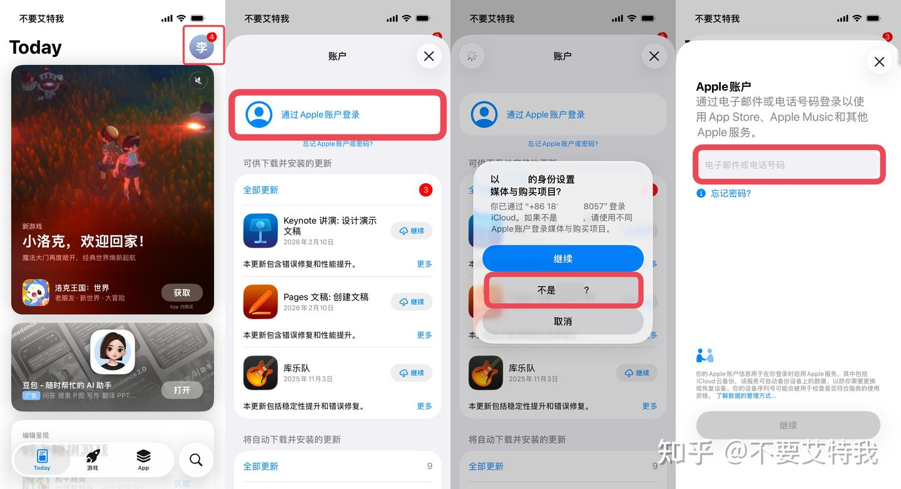
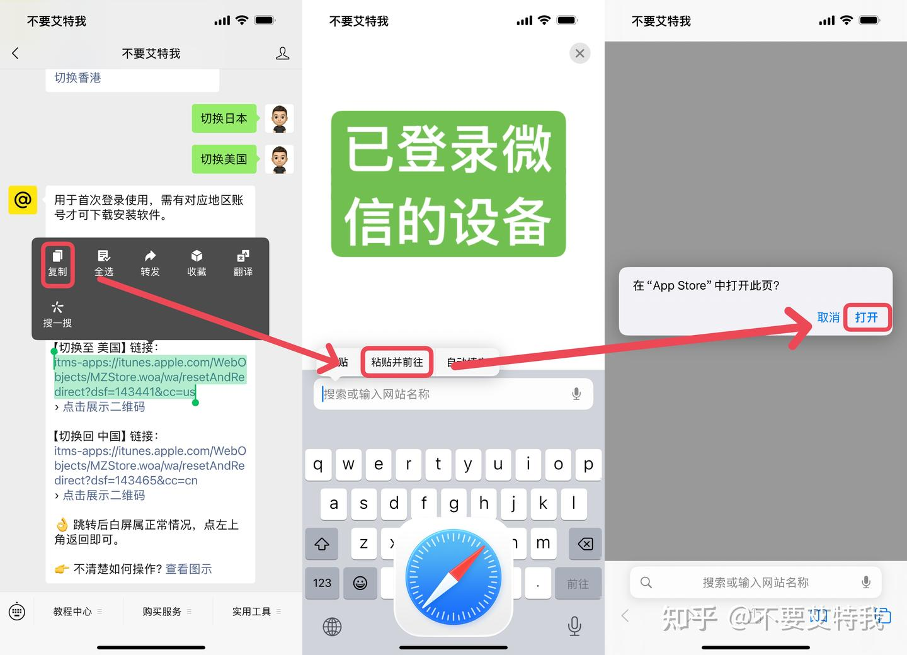

原文：https://www.zhihu.com/tardis/jm/art/2020194112008136084 · 归档于 2026-08-10T06:27:33.244Z
最近推送的 iOS 26.4 砍掉了直接在 App Store 切换账户的功能，导致很多更新了系统的朋友不知道咋切换账户了。
今天就给大家分享一下最新的 App Store 切换账户的方法，此教程除了适配最新的 iOS 26.4 系统也包含 iOS 18 系统的切换方法，旨在帮助大家更好的使用和管理自己的 Apple ID。
Ps：如果你还没有自己的 Apple ID，可以参考下方教程注册一个，此教程兼容外区 Apple ID 和国区 Apple ID 的注册方法。
别再用老方法了！Apple ID 注册规则又双叒叕改了！一、普通切换
1、退出现有账户
打开“设置”App，轻点顶部“Apple 账户”，轻点“媒体与购买项目”，轻点“退出登录”，再次轻点“退出登录”。

2、登录新账户
轻点“媒体与购买项目”，轻点“不是 XXX”，输入新的账户和密码完成登录。

二、进阶切换
1、安装“商店 ID 切换”快捷指令，轻点直达“退出登录”界面。
商店 ID 切换（快捷指令）注意，此快捷指令仅对 iOS 26 系统有效！iOS 18 及以后的旧版系统不支持

2、轻点“媒体与购买项目”，轻点“不是 XXX”，输入新的账户和密码完成登录。
1、退出现有账户
打开“App Store”App，轻点右上角“头像”，在“账户”界面划到最底部，轻点“退出登录”，点击右上角“完成”或“X”。

2、登录新账户
轻点右上角“头像”，轻点顶部“通过 Apple 账户登录”，轻点“不是 XXX”，输入新的账户和密码完成登录。

在“设置”App 中登录外区 Apple ID 存在极高安全风险，核心问题在于混淆了「系统设置」与「App Store」的账户管理机制。若从系统设置登录外区 Apple ID，如果账户被封禁，可能导致设备被锁定从而无法退出账户，需联系苹果客服且成功率极低。
最后补一句，新注册的外区 Apple ID 首次登录前记得先去切换一下对应的 App Store 地区再去登录，不然有很大概率直接送回国区！
切换 App Store 方法如下（演示的是美国 Apple ID 切换 App Store 的方法）
在已登录微信的状态下，把切换链接复制到 Safari 浏览器打开即可自动完成切换。

如果是新设备或是备用机，没有登录微信，可以点击展示二维码，使用设备自带的相机摄像头进行扫描。
itms-apps://itunes.apple.com/WebObjects/MZStore.woa/wa/resetAndRedirect?dsf=143462&cc=jp (二维码自动识别)
如果觉得文章对您有帮助，欢迎点赞评论！如果对此文章有疑问或更好的方法，欢迎留言分享~